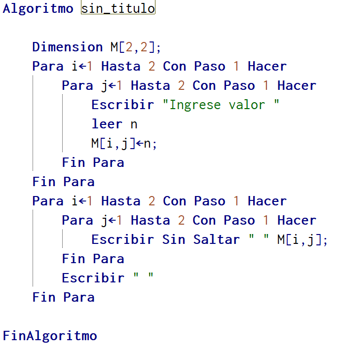

Encabezado 2
En general, una matriz es un conjunto ordenado en una estructura de filas y columnas.

Como puedes observar una matriz está compuesta de columnas y filas, y sus posiciones se establecen siempre mencionando primero la fila y segundo la columna. Esto se puede evidenciar en la posición m[2][1] del gráfico, la cual indica que el objeto está en la fila 2 y la columna 1.
Por otra parte, se puede observar que la matriz contiene elementos de tipo carácter. En donde, tal como se había dicho, siempre toda la matriz trabajara un solo tipo de dato declarado.
Matriz en algoritmo
Dimension m[filas,columnas];
Ejemplo de llenar una matriz de forma manual

Llenar una matriz y mostrar resultados con ciclo para
